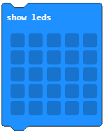
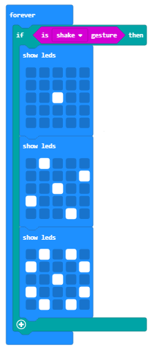

Задача-Гривната¶
В основното училище, в края на втори клас, учениците показват на своите родители какво са научили в този клас. Тогава няколко деца трябва да носят гривни с цветя.
Подобна гривна може да бъде съчетана с Micro:bit устройство. Цветята могат да се показват, използвайки LED светлините, при движение на потребителя.

За направата на една гривна ще ви трябват:
1 Micro:bit
Плат или декоративна хартия
Ножици
Тиксо/връв
Трябва да програмираме Micro:bit-а да показва цвете на екрана си (5x5 LED мрежа) всеки път, когато потребителят движи ръката си.
Етап 1
Отидете на https://makecode.microbit.org/.
Искаме да създадем програма, която ще позволи на дисплея на Micro:bit-а да се показва цвете всеки път, когато движение е направено, по-точно, искаме да регистрираме всеки вид движение с Micro:bit устройството, използвайки неговия акселометър. Дисплеят показва желаното изображение, пускайки LED светлините, само при отчитане на движение.
За да решим тази задача, ще използваме условен (разклоняващ) блок, а условието ни ще бъде отчитането на движение. Коя последователност от кодове ще бъде направена, зависи от това дали условието е изпълнено. При движение светлините ще светнат във формата на цвете, а при липса на движение-те ще останат изгасени.
Етап 2
Започнете нов проект и завлачете блока  от категория
от категория  в блока
в блока  , намиращ се в категория
, намиращ се в категория  .
.
Блоковете, намиращи се в блока forever, ще действат до изключване на Micro:bit устройството. .
Завлечете блока  (намиращ се в категория
(намиращ се в категория  ) в полето за въвеждане на условие
) в полето за въвеждане на условие  .
.
От падащото меню на блока :

Изберете  опцията. Тази операция отчита движение.
опцията. Тази операция отчита движение.

Основавайки се на параметрите на задачата, цвете ще е появи на Micro:bit-а при регистриране на движение (при изпълнение на условие). Нужно е да завлечем блоковете за показване на цвете (които пускат специфични LED светлини) от категорията Basic в разклонението (изпълнено условие, или разклонение ДА):
Ще използваме три блока show leds за показване на цветето. Тези блокове ще се използват за показване на желаното изображение на цвете. Пре движение, програмата трябва да изглежда така:
В тази задача има и условие, което казва, че ако движение не е направено, нищо не трябва да се показва на Micro:bit-а. За да осъществим това, трябва да добавим разклонение, което ще задейства конкретни блокове при неизпълнение на условието (в нашия случай-липса на движение). Можем да добавим това разклонение, натискайки  . Към него ще добавим блока
. Към него ще добавим блока  , който се използва за изчистване на екрана.
, който се използва за изчистване на екрана.
Накрая кодът за гривната ще изглежда така:
Симулация:
Етап 3
Свалете .hex файла на своя компютър, натискайки бутона  или
или  . Micro:bit-ът ще бъде готов да започне работа, щом завлечем файла в него.
. Micro:bit-ът ще бъде готов да започне работа, щом завлечем файла в него.
Когато приключите с програмирането на Micro:bit-а, поставете го във вече готовата гривна и го пробввайте:
Гривната: